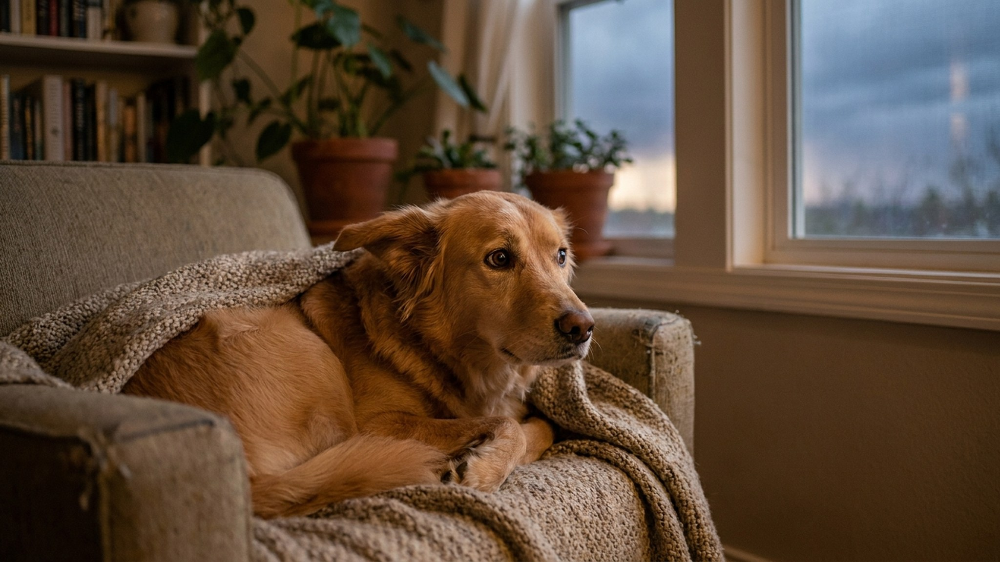

Собака боится салютов и грозы: что делать и какие ошибки усугубляют страх

29 мая 2026 · 10 минут чтения · Поведение · Лето · Собаки
Каждое лето тысячи собак переживают настоящий кошмар — салюты, гроза, петарды соседского ребёнка в подъезде. Акустическая фобия встречается у 30–50% собак и стоит на третьем месте среди поведенческих проблем — после страха разлучения и агрессии. Это не каприз и не избалованность: это физиологический ответ нервной системы, который без коррекции становится только хуже. И самое важное: большинство хозяев ненамеренно делают страх сильнее. Разбираем, почему это происходит и что реально работает.
🐾 Первая помощь — всегда под рукой
AnimaLife подскажет, что делать в тревожной ситуации с питомцем ещё до визита к врачу. Откройте в один тап.
Открыть AnimaLife →Открыть в MAX →
Почему собаки боятся громких звуков: слух, эволюция, генетика
Слух собаки принципиально острее человеческого. Люди слышат звуки до 20 000 Гц, собаки — до 65 000 Гц. Они способны улавливать источники звука на расстоянии до 26 км и с точностью до нескольких градусов определяют направление. Салют, который для нас «громковато», для собаки — физически болезненный удар по слуховому аппарату.
Добавьте к этому резкий запах пороха, который собака улавливает задолго до первого взрыва, вспышки света, меняющие пространственную ориентацию, и инфразвуковые волны от грозового разряда, которые собака буквально ощущает телом. То, что для хозяина — красивое зрелище или летний дождь, для собаки — комплексная мультисенсорная атака.
Есть и эволюционный фактор. Громкий неожиданный звук в природе означает реальную опасность — обвал, нападение, разряд молнии рядом. Реакция «бей или беги» включается автоматически. Проблема в том, что в квартире бежать некуда, напасть не на кого, а звук повторяется снова и снова на протяжении 30–40 минут. Нервная система остаётся в состоянии перегрузки, не получая возможности разрядки.
Генетика влияет существенно. Бордер-колли, австралийские овчарки, немецкие овчарки, шелти, бигли и некоторые линии лабрадоров чаще дают выраженные страховые реакции — это подтверждено генетическими исследованиями. Однако фобия может развиться у любой собаки, если в критический период социализации от 3 до 14 недель она не была познакомлена с разнообразными громкими звуками.
Три уровня: страх, тревога и фобия — важно различать
Не каждая реакция на гром требует одинакового подхода. Ветеринарные поведенческие специалисты выделяют три уровня, и от уровня зависит, достаточно ли поведенческой работы или нужны медикаменты.
- Лёгкий страх. Собака беспокоится, ищет хозяина, слегка дрожит, прячется под кровать или за диван, но успокаивается в течение 10–20 минут после окончания события. Ест, пьёт, реагирует на кличку. Базовая функция сохранена. Поведенческая коррекция + феромоны обычно достаточны.
- Умеренная тревога. Сильная дрожь, отказ от еды, невозможность остаться в покое, долгое восстановление после события — несколько часов. Не реагирует на команды. Требует целенаправленной коррекции, часто — добавления успокаивающих препаратов в сезон.
- Фобия / паническая атака. Разрушительное поведение (прогрызает двери, разносит вещи), попытки вырваться с риском для жизни (выпрыгнуть из окна, перепрыгнуть забор), потеря контроля над телом (непроизвольное мочеиспускание), не узнаёт хозяина, не реагирует на боль. Здесь поведенческая работа без медикаментозной поддержки не эффективна. Это медицинская проблема.
Граница между умеренным страхом и фобией — безопасность. Если собака способна причинить серьёзный вред себе или другим — это уже не «поведенческая особенность», а патология, требующая ветеринарного вмешательства.
Главные ошибки хозяев: почему страх становится хуже
Большинство хозяев допускают одни и те же ошибки из самых лучших побуждений. Каждая из них закрепляет страх на нейрохимическом уровне, и собаке становится хуже с каждым последующим сезоном.
- Жалеть, гладить и причитать во время паники. «Всё хорошо, не бойся, маленький» сказанное взволнованным голосом — это подкрепление страховой реакции. Собака считывает ваш тембр, напряжение мышц, запах кортизола. Ваша жалость для неё буквально означает: «да, есть чего бояться, хозяин тоже встревожен». Можно быть рядом, можно положить руку спокойно — но эмоциональные причитания работают против вас.
- Ругать, наказывать за «трусость». Перепуганная собака физически не может контролировать своё поведение — это не непослушание, это физиология. Наказание добавляет к страху перед звуком страх перед хозяином, что кратно ухудшает ситуацию.
- Запирать одну в тёмной комнате. Изоляция у социальных животных резко усиливает тревогу. Собака остаётся один на один с триггером без какой-либо поддержки.
- Принудительно «знакомить» со звуком. Тащить собаку смотреть на фейерверк — «вот видишь, ничего страшного». Это называется флудинг (flooding, «затопление»): принудительное воздействие стрессором. Без специальной подготовки флудинг закрепляет травму и делает фобию необратимой.
- Годами игнорировать проблему. Акустическая фобия без коррекции прогрессирует. С каждым годом собака боится сильнее, триггеры расширяются: начинает бояться темнеющего неба, запаха надвигающегося дождя, включения телевизора с похожим звуком. Это называется генерализацией страха.
Что делать ДО события: подготовка за 2–4 недели
Ключевое правило: подготовка начинается заранее, а не в день праздника. В России предсказуемые события с салютами: 9 мая, 12 июня, 4 ноября, 31 декабря. Сезон гроз в средней полосе — с мая по август. У вас есть время подготовиться.
- Создайте укрытие-нору. Понаблюдайте, куда собака прячется сама — под кровать, в шкаф, в ванную. Это её инстинктивный выбор безопасного места. Сделайте его ещё лучше: положите любимую лежанку, старую одежду с вашим запахом, мягкое покрывало сверху. Не закрывайте вход — собака должна иметь возможность выйти. Принудительное нахождение в укрытии равно изоляции.
- Белый шум. Вентилятор, фен в другой комнате, специальные треки «white noise for dogs» на YouTube или Spotify — они физически заглушают резкие пики звука. Заранее приучите собаку, что этот звук предшествует хорошему: еде, игре. Тогда в день события белый шум станет частью сигнала безопасности.
- Закройте окна и задёрните шторы. Снизит интенсивность звука на 10–15 дБ и уберёт визуальные вспышки, которые усиливают испуг.
- Выгуляйте заранее. За 1–2 часа до ожидаемого события. Физически уставшая собака реагирует спокойнее. В период салютов и гроз выгуливайте только в шлейке с дополнительным карабином на ошейнике, никаких рулеток — убегающая в панике собака не слышит команд.
- Феромоны Адаптил (DAP — Dog Appeasing Pheromone). Синтетический аналог феромонов кормящей суки. Диффузор начинают использовать за 2 недели до ожидаемого события, спрей — за 30 минут до начала. Работает у 60–65% собак при лёгкой и умеренной тревоге. Продаётся в ветаптеках и зоомагазинах России.
- Успокаивающие добавки. L-теанин (аминокислота зелёного чая), альфа-казозепин (Zylkene, молочный белок), магний — натуральные компоненты с умеренной доказательной базой. Не заменяют препараты при тяжёлой фобии, но снижают базовый уровень тревожности в фоне. Начинают за 1–2 недели.
- Успокаивающий жилет TTouch или ThunderShirt. Лёгкое равномерное давление на корпус — аналог «крепкого объятия». У части собак снижает интенсивность реакции. Приучайте заранее: надевайте жилет во время спокойных ситуаций, потом во время событий.
Что делать ВО ВРЕМЯ события: как себя вести
Вы уже не можете изменить то, что происходит снаружи. Ваша задача — управлять тем, что происходит внутри квартиры.
- Спокойствие хозяина — главный инструмент. Это не метафора. Собака считывает кортизол в вашем поте, микронапряжение мышц, изменение голоса. Сядьте, дышите ровно и медленно, говорите обычным голосом. Если вы тревожитесь сами — это передаётся.
- Предложите занятие. Жевание физиологически снижает тревогу — активирует парасимпатическую нервную систему. Долгожующая игрушка с арахисовой пастой или паштетом, конг с замороженным лакомством — подготовьте заранее и достаньте только тогда, когда начнётся звук. Так «страшный звук» начнёт ассоциироваться с «появляется самое вкусное».
- Не запирайте. Пусть собака сама выбирает место — ваши ноги, укрытие, угол за диваном. Не тащите её «успокаиваться» в конкретное место насильно.
- Не форсируйте контакт. Если собака уходит — не идите за ней. Ваше спокойное присутствие рядом важнее, чем объятия.
- Не выходите на прогулку в разгар события. Максимум — короткий выгул в тихое место до начала или значительно после. Никогда не берите испуганную собаку туда, где источник стресса.
Десенситизация и контробусловливание: единственный способ реально изменить реакцию
Все описанные выше меры — управление ситуацией. Они снижают интенсивность реакции, но не меняют лежащую в основе нейронную ассоциацию «громкий звук = опасность». Единственный способ перестроить эту ассоциацию — десенситизация плюс контробусловливание (DS/CC). Работает за 4–12 недель при регулярных занятиях.
Принцип: собака постепенно привыкает к звуку в ситуации, которая ассоциируется с чем-то хорошим. Мозг перестраивает связь «звук = опасность» на «звук = что-то приятное сейчас будет».
- Найдите запись грозы или салюта в хорошем качестве. На YouTube ищите «thunderstorm sounds for dogs», «fireworks sounds 1 hour». Важно: запись должна включать инфразвуковую составляющую — некоторые треки специально созданы для десенситизации.
- Определите порог чувствительности вашей собаки — такую громкость, при которой она только чуть насторожилась, но не испугалась. Начинайте ниже этого порога.
- Включаете запись — сразу начинаете кормить лакомством, играть или делать что-то, что собака любит. Звук звучит — лакомство идёт. Запись выключается — лакомство заканчивается. Только вместе, никогда по отдельности.
- Каждые 3–5 сессий немного увеличивайте громкость. Если собака дала выраженную реакцию — откатитесь на шаг назад и работайте там ещё неделю.
- Сессии — по 5–10 минут, не чаще двух раз в день. Более длинные сессии дают обратный эффект.
Критически важное правило: DS/CC не проводится во время реального события. Это отдельная учебная среда. Реальный взрыв за окном будет на порядок интенсивнее, чем ваша запись — и уничтожит весь прогресс, если вы попытаетесь «тренировать» именно тогда.
Когда нужны препараты: честный разговор
При умеренной и тяжёлой фобии поведенческая работа без медикаментозной поддержки малоэффективна или вовсе не работает. Причина физиологическая: мозг в состоянии выраженной паники не обучается. Уровень кортизола и адреналина буквально блокирует формирование новых нейронных связей. Препараты снижают базовый уровень тревоги и открывают «окно обучаемости», в котором поведенческая работа начинает давать результат.
- Силаленсин / Sileo (дексмедетомидин оротат). Первый препарат, одобренный FDA специально для лечения акустической фобии у собак. Гель, наносится на слизистую рта. Действует через 30–60 минут, не вызывает выраженной седации — собака остаётся в сознании, просто снижается тревога. В России доступен через ряд ветклиник как импортный препарат.
- Тразодон. Антидепрессант с быстрым анксиолитическим эффектом. Принимается за 1–2 часа до события. Хорошо работает в комбинации с другими методами.
- Габапентин. Особенно эффективен при сочетании шумовой фобии с болевым синдромом (пожилые собаки с артритом — боль усиливает тревогу и наоборот).
- Флуоксетин / кломипрамин. Курсовые препараты для хронической генерализованной тревожности. Назначаются, если у собаки несколько триггеров или сопутствующий страх разлучения. Эффект развивается за 4–6 недель, принимаются курсом несколько месяцев.
Ацепромазин (ACP) в качестве единственного препарата при страхе — устаревшая и вредная практика. Он вызывает двигательный паралич, но не снижает тревогу. Собака обездвижена, но внутренне паникует в полной мере. Это жестоко. Применяется только как часть комбинированной схемы и только по назначению врача.
Все препараты назначает ветеринарный врач или ветеринарный поведенческий специалист после осмотра. Самолечение недопустимо.
🐾 Экономьте на лишних визитах к врачу
Сначала спросите AI-ветеринара в AnimaLife — часто этого достаточно, чтобы понять, нужен ли визит к врачу.
Спросить бесплатно →Спросить в MAX →
Профилактика у щенка: критическое окно 3–14 недель
Лучшее время предотвратить акустическую фобию — щенячий возраст. Период социализации длится примерно с 3 до 14–16 недель: в это время мозг буквально программирует список «нормального» и «опасного». Всё, с чем щенок познакомился в это окно в безопасной ситуации — нейтрально или позитивно. Всё, что не попало в этот список — автоматически маркируется как потенциальная угроза.
Это не значит, что нужно начинать с громких взрывов. Правило — постепенность и позитивный контекст:
- Включайте звуки города, транспорта, грозы и бытовых приборов на небольшой громкости — и сразу же кормите, играйте, хвалите. Звук = что-то хорошее. Это буквально программирование ассоциации на нейронном уровне.
- Используйте готовые программы звуковой социализации. Sound Socialisation Puppy Programme от Dogs Trust (Великобритания) — бесплатно скачивается, 40+ треков разных звуков с нарастающей громкостью.
- Первый неожиданный громкий звук на улице: скажите весёлым голосом «отлично!» и дайте лакомство. Не «успокаивайте» — ваше «не бойся» уже несёт тревогу. Ваша спокойная радостная реакция задаёт эмоциональный тон.
- Не торопитесь и не форсируйте. Слишком громко и слишком рано — и вы получите сенсибилизацию вместо десенситизации, то есть обратный эффект.
Щенок, правильно социализированный к звукам, во взрослом возрасте может на секунду насторожиться на резкий хлопок — и сразу вернуться к своим делам. Это принципиальная разница в качестве жизни. И вашей, и собаки.
Что делать прямо сейчас: план на ближайшие недели
Если до следующего события есть время — начните с десенситизации на записях. Одновременно приобретите феромоны Адаптил (диффузор) и оборудуйте укрытие. Обратитесь к ветеринарному врачу, если реакция умеренная или тяжёлая — обсудите медикаментозную поддержку до сезона, а не в панике в ночь на 1 января.
Если событие уже скоро и времени нет — сосредоточьтесь на организации среды: укрытие, белый шум, закрытые окна, ранняя прогулка, ваше спокойствие. Даже без предварительной подготовки грамотная организация среды значительно снижает интенсивность эпизода.
← Все статьи · Открыть AnimaLife в Telegram · RSS